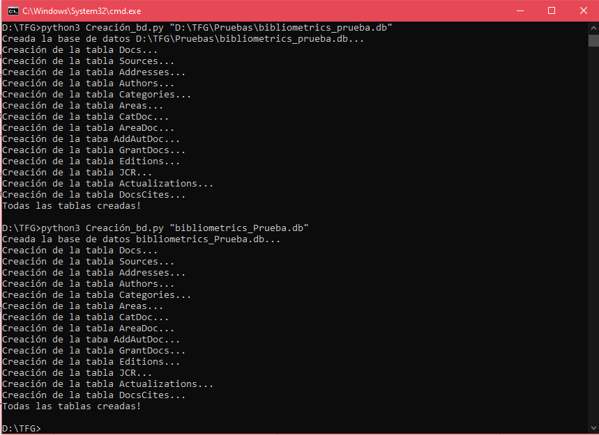
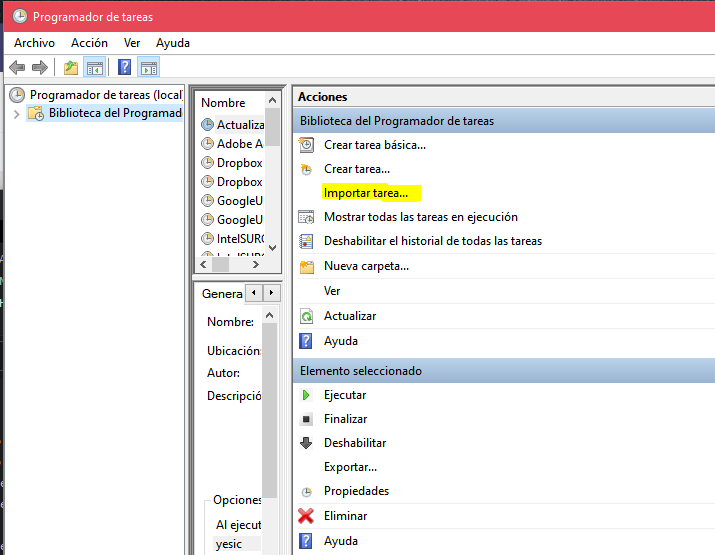

Creación de la BD empleando la API de WoS (obsoleto)
Fernández-Ramos, Yésica; UDC Ranking’s Group
scimetr 0.3.6 (2023-04-21)
Source:vignettes/docs/wos_bd.Rmd
wos_bd.RmdNota importante: La information de este
documento solo es aplicable a las versiones 0.3.6 o anteriores de
scimetr, por cambios en la configuración de las bases de
datos (se mantiene por si resulta de utilidad; debido a las
restricciones - algunas no expuestas explícitamente por WoS - en cuanto
al número y volumen de descargas a través de su API, decidimos no
continuar este desarrollo y apostar por repositorios con datos en
abierto para garantizar la transparencia y la reproducibilidad).
A continuación, se describen los pasos para la creación una base de
datos empleando la API de
WoS, así como para la planificación de las actualizaciones.
Posteriormente se puede importar a R empleando la función
ImportDB.wos() del paquete scimetr. Para
información adicional ver Fernández-Ramos
(2021).
En primer lugar es necesario estar subscrito a la Web of Science API Expanded (disponer de nombre de usuario y contraseña). Hay que tener en cuenta que el acceso al sitio web no implica el acceso a la API, ya que Thomson Reuters los factura por separado.
Software necesario
Para la creación del sistema de información, es necesario tener instalado Python, concretamente, una versión igual o superior a la 3.6. Importante que se encuentre en el path del sistema. Además, son necesarias las siguientes librerías:
Pandas
xml.etree.ElementTree
sqlite3
re
datetime
Por otra parte, como la librería de WoS fue modificada en el proyecto, es importante descargar la carpeta WoS del repositorio y copiarla en la ruta donde se encuentra Python instalado, por ejemplo: C:/Python3.6/Lib/site-packages/.
Además, se puede descargar DB Browser for SQLite para inspeccionar los datos de la BD.
Por último, se descargan los archivos del repositorio que se encuentran en la carpeta utils y actualizations.
Utilización de los Scripts
Los scripts descargados pueden ejecutarse por separado. Es importante saber que para ejecutar aquellos que incorporan datos al modelo, es necesario contar con una base de datos creada. Para ello, existe un script, Creación_bd.py, al que sólo tenemos que pasarle el nombre que queremos ponerle al sistema de información y, si no queremos que la cree en la ruta actual del archivo, la ruta de creación. Se muestran los dos ejemplos en la siguiente figura.

Para ejecutar los demás scripts el procedimiento es el mismo, cambiando los parámetros. La lista de parámetros necesarios para cada archivo se muestra en la siguiente tabla.
| Archivo | Parámetros |
|---|---|
| Dascarga_datos.py | "user "password" "bd" "query" "symbolicTimespan"(optional) |
| Actualizar_citas.py | "user" "password" "bd" "query" |
| Importar_JCR.py | "archivo_jcr.xlsx" "bd" |
Creación de las Actualizaciones
Para la creación de las actualizaciones únicamente es necesario cambiar las rutas en los archivos BAT.
Adicionalmente, se pueden añadir en el programador de tareas de Windows las tareas necesarias. Para ello, en el repositorio existen tres archivos XML que se pueden importar directamente en el programador (ver figura siguiente). Una vez importados, sólo tendremos que cambiar la ruta del archivo BAT y los campos que creamos convenientes. Para más detalles ver Sección 4.7 de Fernández-Ramos (2021).

Referencias
Bacis, Enrico (2019). wos: Web of Science client using API v3. Python package version 0.2.5. https://github.com/enricobacis/wos.
Fernández-Ramos, Yésica (2021). Análisis y Diseño de un Sistema de Información Bibliométrico de Publicaciones Científicas. Trabajo de fin de Grado en Ingeniería Informática.